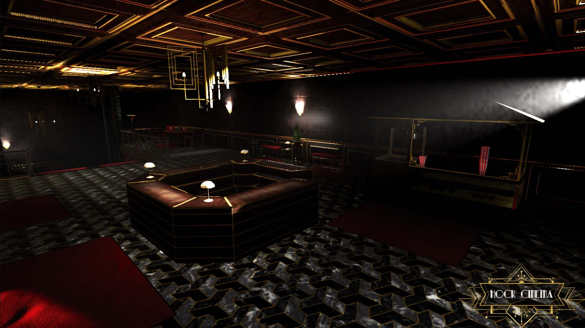
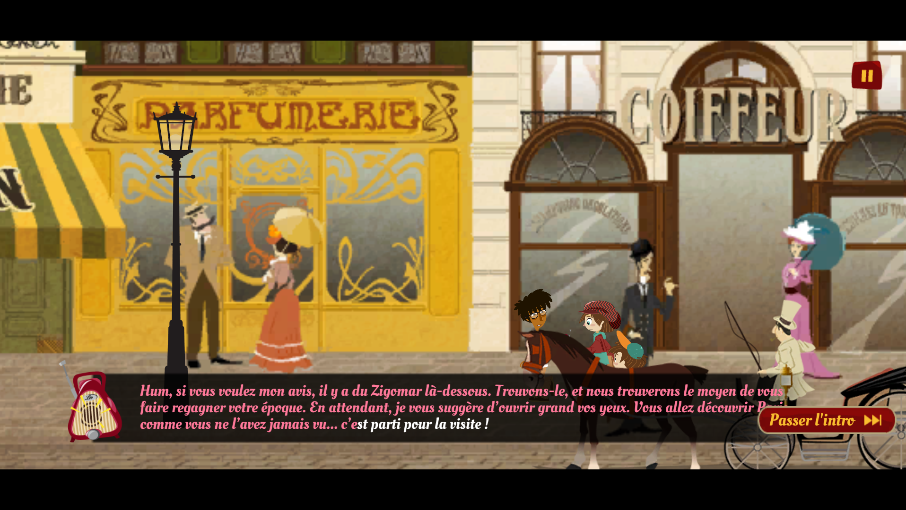
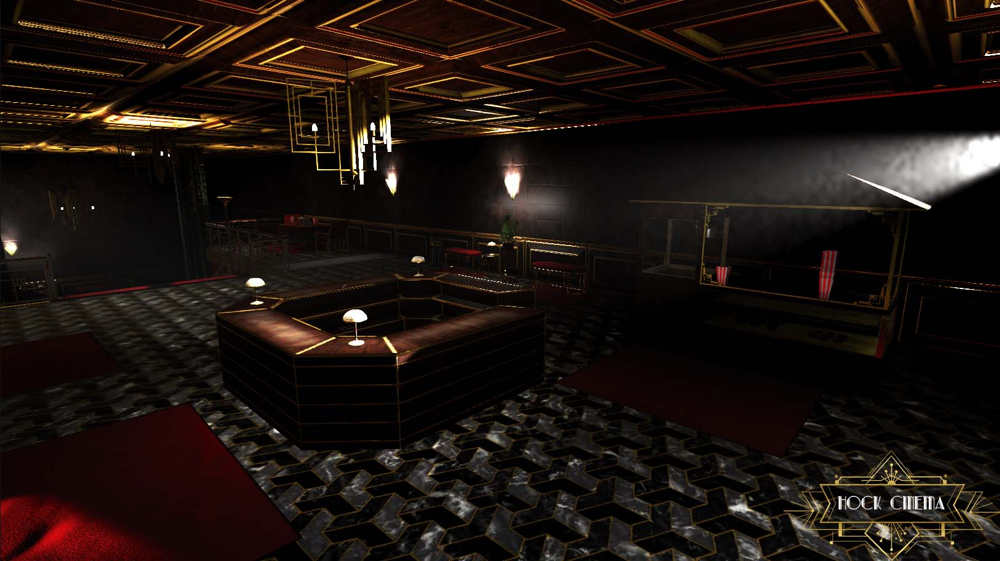
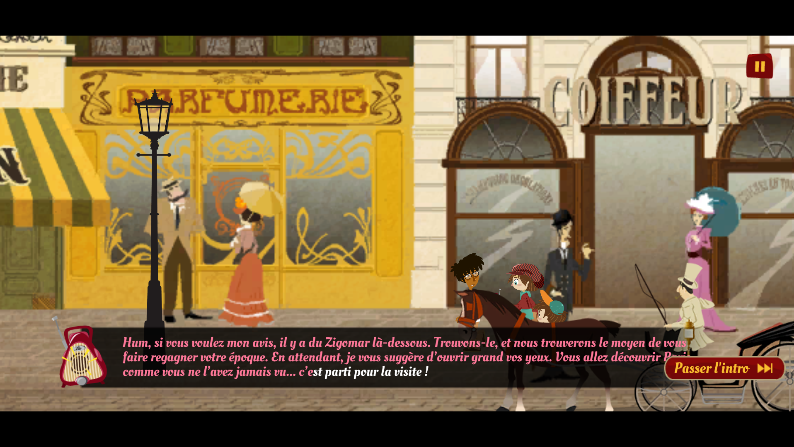

PARLONS UN PEU DE MOI
Bonjour !
Je suis Clément Guichard,
un professionnel passionné réalisant des jeux et outils d'éditeur sur Unity !
MON TRACÉ
Actuellement situé en France à Toulouse, une ville riche en patrimoine et événements culturels, j'ai rejoint la
prestigieuse école de game design et d'animation d'E-artsup afin d'en apprendre plus sur le monde du jeu vidéo et de la
programmation et de concrétiser mes projets les plus ambitieux.
J'ai par la suite développé mon expérience professionnelle au sein de Tataragne Interactive, une start-up innovante
spécialisée dans le développement web et applications en Réalité Augmentée, chez qui j'ai été derrière la conception de
plusieurs applications ludiques pour de nombreux musées de France.
En tant qu'indépendant, je prends beaucoup de plaisir à pouvoir travailler sur une variété de projets différents,
interagir avec de nouvelles technologies et à travailler en équipe avec d'autres passionnés. Ma fascination réside
vraiment dans le développement de jeux et toute l'univers gravitant autour de cette industrie. J'aime la simple idée de
concevoir des expériences interactives qui peuvent être appréciées dans le monde entier en un simple clic.
J'aime aussi pouvoir créer et expérimenter le développement d'outils indépendants, car cela me donne une chance
d'essayer de redonner à la communauté dans laquelle je travaille et de faciliter la vie d'autres développeurs en
partageant avec eux mes connaissances, qu'ils soient amateurs ou confirmés.
Quand je ne travaille pas avec des clients, je travaille probablement sur un projet personnel, une Game Jam, ou bien je
découvre un des nombreux événements culturels de ma ville !

 



ET MAINTENANT ?
Je suis disponible pour tout recruteur qui passerait par là !
Si vous êtes à la recherche d'un programmeur confirmé pour
grossir vos rangs, d'un tuteur pour vous enseigner les bases du développement de jeux,
ou si vous cherchez simplement quelques outils d'éditeur pour fluidifier votre processus de création,
vous êtes au bon endroit !
MES COMPÉTENCES
Domaines
Outils & Frameworks
PAS ENCORE CONVAINCU ?
Jetez un coup d'oeil à mon portfolio !